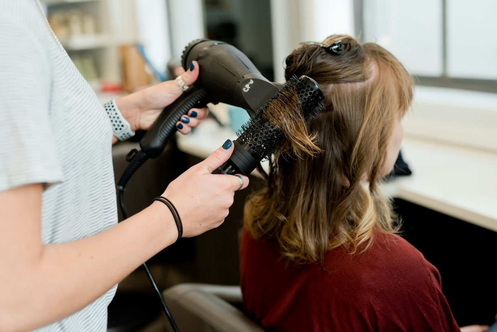

01 · [TO CONFIRM]
Apprentice-to-Master Ratio
Intimate tactile oversight, manual blade-alignment checks and instant correction on live models. [TO CONFIRM]
Academy & Apprentice Guild · Ipoh, Perak
Sum Yee Hair & Beauty Academy bridges foundational geometric cutting architecture with real salon-floor practice — inside a working salon, not a classroom.
Top 10 Salon in Ipoh 2026 Real Salon Studio Practicum Apprenticeship & Masterclasses
Unverified curriculum details are tagged [TO CONFIRM] throughout this page — confirm them with the salon before relying on them.

01 · [TO CONFIRM]
Intimate tactile oversight, manual blade-alignment checks and instant correction on live models. [TO CONFIRM]
02 · Verified Enclaves
Active rotations between the Canning Garden heritage garden enclave and the Pasir Puteh salon.
03 · Pedagogy
From consultation psychology and private-room etiquette to razor-precision geometry — learned on the floor.
Comprehensive Guild Syllabus
Each track is grounded in rigorous technical execution, scalp-health ethics and bespoke client etiquette. All track lengths & cohort details [TO CONFIRM]
[TO CONFIRM] Syllabus
Precision scissor-over-comb, cranial morphology mapping, graduation arcs and classic graduated bobs. Includes live-model blocks and a guild certificate. [TO CONFIRM]
Tuition on consultation · Prerequisite: dedication & dexterity
[TO CONFIRM] Syllabus
Freehand clay sweeps, micro-mesh foilayage and lift dynamics on resistant natural black hair, with tone neutralisation. [TO CONFIRM]
Tuition on consultation · Hands-on colour dispensary
[TO CONFIRM] Syllabus
Scalp analysis, follicular sebum control, botanical acid scalp balancing and aromatherapeutic spa care. [TO CONFIRM]
Tuition on consultation
[TO CONFIRM] Syllabus
Partitioned private-enclave protocols, modesty guidelines, consultation empathy and social-folio production. [TO CONFIRM]
Tuition on consultation
The Sum Yee Distinction
Unlike generic textbook academies, Sum Yee apprentices learn directly inside a working botanical salon in Ipoh.
Recognised in the Top 10 Best Hair Salons in Ipoh 2026. Train under standards the region already trusts.
Hands-on practice in private ladies’-room partitions and privacy drapery, with botanical care throughout.
Cross-train across the serene Canning Garden flagship and the high-cadence Pasir Puteh branch.
Client booking psychology, content creation and consultation etiquette that turn craft into a career.
Stage 01
In-person interview, wrist ergonomics, precision grip calibrating and foundational head-sheet geometry.
Stage 02
Mannequin sculpting, colour-formula measuring, low-ammonia pigment lifting tests and live-model work.
Stage 03
Transitioning to live models under master-stylist oversight, with salon consultation timing and head-spa care.
Upcoming cohort intake: [TO CONFIRM] — ask the admissions desk for the next intake date and cohort size.
Admissions Desk
Customise your intake enquiry. The academy will prepare a syllabus overview and schedule an informal studio visit. Official telephone: 05-547 1716.
Consultations Thu–Tue, 10:30 am – 7:00 pm (Wednesday closed).
Two Enclaves · Ipoh
01 · Flagship & Academy
57, Jln Canning Estate, Taman Canning, 31400 Ipoh, Perak
Thu – Tue, 10:30 am – 7:00 pm · Closed Wednesday
Private partitioned Muslimah suite · Botanical garden setting
02 · Community Enclave
Pasir Puteh Central, Ipoh, Perak
Hours on phone consultation · Walk-ins welcome
Precision cuts, gloss touch-ups & express care